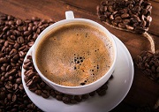
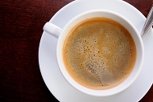

Кофе Американо
250 мл
Стоимость:
90
руб.
Американо – один из популярных кофейных напитков в мире. В его состав входит эспрессо разбавленный водой. При разбавлении эспрессо водой, напиток получается не такой крепкий и большего объема. Достаточно простой рецепт, но история его появления намного интересней.
Начнем с того, что в американцы любят некрепкий кофе. Поэтому у них популярен фильтр-кофе. Это кофе приготовленный путем проливания горячей воды через кофе и фильтр. Вода проливается вручную, а фильтр используется для фильтрации мелких частиц молотого кофе.
История американо начинается со времен Второй мировой войны. А именно, когда солдаты из Америки высадились в Италии. Они пытались найти полюбившийся им на родине напиток. У них не получалось, так как в Италии популярен эспрессо. Данный напиток не устраивал американцев своим малым объемом и большой крепостью.


Для решения этой проблемы, итальянцы решили разбавить эспрессо большим количеством воды. Получался некрепкий напиток большого объема, как и нравилось американцам. Назвали же получившийся напиток – американо. Данное название подчеркивало плохой вкус американцев.
Итальянцы и не догадывались, что придуманный ими напиток станет популярен во всей Европе.
В чашке эспрессо или американо одинаковое количество кофеина. Однако в разбавленном водой напитке его концентрация меньше, что делает вкус более гармоничным. В базовом варианте в 100 мл ароматной жидкости содержатся 9,5 ккал, по 0,6 г белка и жира, 0,7 г углеводов. В ней присутствуют натрий, калий, магний, витамины группы PP, полиненасыщенные жирные кислоты. Добавки повышают калорийность и пищевую ценность напитка.
Американо содержит достаточное количество воды, поэтому не вызывает обезвоживания. Его польза заключается в антиоксидантном и тонизирующем свойствах, легком мочегонном действии. Регулярное употребление (1-2 порции в день без добавок) ускоряет обмен веществ, способствует снижению веса.
Обратно в меню
Стоимость:
90
руб.